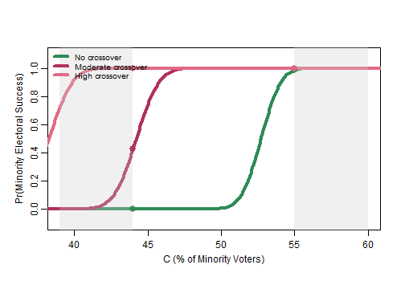

Application 4: comparing redistricting scenarios
Motivating example: two proposed districts (Online Appendix C.2)
Online Appendix C.2 of Atsusaka (2021) compares two proposed Louisiana districts with minority shares of 59.2% and 63.2%. It assumes all minority voters support the minority candidate, no White voters do so, and minority and White turnout rates are 50% and 60%, respectively. Under these assumptions, both plans yield probabilities very close to one, so the additional four percentage points make little difference to the prediction.
appendix_C <- seq(from = 1, to = 100, by = 0.1)
louisiana_plan <- sim_redistrict(
coethnic = 1, crossover = 0, gap = c(0.5, 0.6)
)
proposed_C <- c(59.2, 63.2)
proposed_index <- vapply(
proposed_C, function(value) which.min(abs(appendix_C - value)), integer(1)
)
data.frame(
minority_share = proposed_C,
predicted_probability = louisiana_plan[proposed_index]
)
#> minority_share predicted_probability
#> 1 59.2 0.9999989
#> 2 63.2 1.0000000sim_redistrict() and plot_redistrict() let
users examine the composition range where a change would matter under
their own assumptions. These are conditional model predictions;
comparisons of district plans do not by themselves establish legal vote
dilution.
Comparing voting scenarios
sim_redistrict() calculates model predictions as the
minority electorate share changes from 1 to 100 percent in 0.1-point
increments. Each returned vector has 991 values. Give each scenario a
named column, then pass the resulting matrix to
plot_redistrict().
plan_1 <- sim_redistrict(coethnic = 0.9, crossover = 0)
plan_2 <- sim_redistrict(coethnic = 0.9, crossover = 0.3)
plan_3 <- sim_redistrict(coethnic = 0.9, crossover = 0.5)
plans <- cbind(
"No crossover" = plan_1,
"Moderate crossover" = plan_2,
"High crossover" = plan_3
)
plot_redistrict(plans = plans, range = c(44, 55))
range is expressed in electorate percentages, not vector
positions. The plot uses column names in its legend and can compare one
or more scenarios. Choose coethnic and crossover assumptions that are
appropriate to the setting, then compare how they change the
relationship between electorate composition and predicted success.